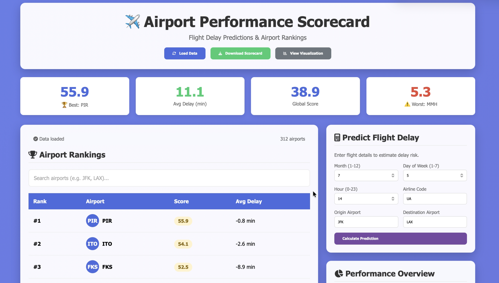

Python | Machine Learning | Neural Networks
Flight Delay Prediction System + Airport Intelligence Dashboard
AI-driven flight delay prediction platform using historical aviation datasets, predictive machine learning models, and airport intelligence scorecards.
- Engineered regression and classification models to forecast delay duration and cancellation risk
- Built a multi-task neural network using predictive aviation datasets
- Designed airport ranking scorecards and modern analytics UI for major U.S. airports